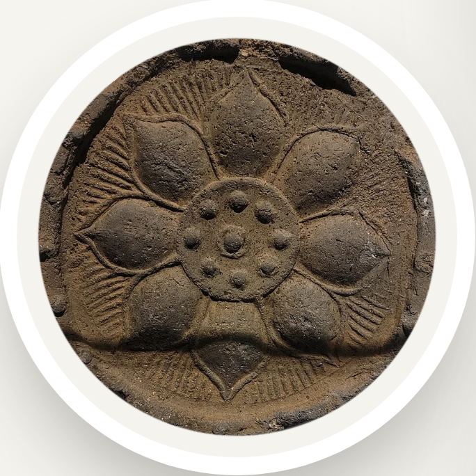
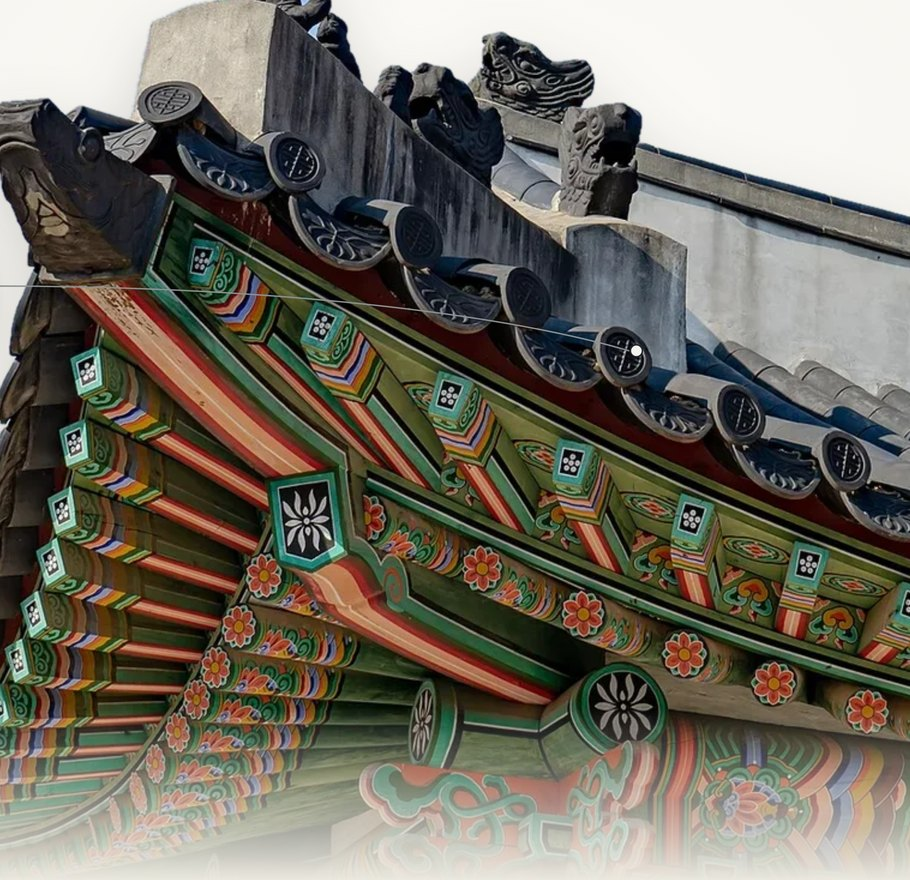

○○교육청 · 2027
안전망은 기와 네 장으로 잇습니다
- 01예방
위험을 먼저 찾아 고친다
- 02대비
훈련하고 장비를 갖춘다
- 03대응
일이 나면 바로 움직인다
- 04복구
수업을 빨리 되돌린다
○○교육청 안전총괄과2027. 1. · 가상 예시
수막새 · 끝단
빈틈은 늘 끝에서 생깁니다

수막새기와 줄 끝을 하나도 빠짐없이 막는 연꽃무늬 막새.
줄 하나가 아무리 길어도 끝 한 장이 빠지면 빗물이 스민다.학교의 끝단방과 후 · 통학로 · 야외 활동처럼 안전 점검이 늘 늦게 닿는 곳.
줄 하나가 아무리 길어도 끝 한 장이 빠지면 빗물이 스민다.학교의 끝단방과 후 · 통학로 · 야외 활동처럼 안전 점검이 늘 늦게 닿는 곳.
○○교육청 안전총괄과2027. 1. · 가상 예시
참 고 · 판 본 목 록 표
빌려 온 본문 #81 판본 목록표 · 내용은 다른 가상 예시
○○교육청 안전총괄과2027. 1. · 가상 예시

예 방 · 짚 을 곳
점검은 지붕 위부터 처마 끝까지
- 잡상지붕 위에서 재앙을 막는 수호상 — 학교 안전 책임자
- 수막새줄 끝을 막는 막새 — 방과 후 · 통학로 점검
- 처마 끝선교실에서 통학로까지 한 줄 — 같은 기준으로 점검
○○교육청 안전총괄과2027. 1. · 가상 예시
참 고 · 판 심 대 조 지 표
빌려 온 본문 #95 판심 대조 지표 · 내용은 다른 가상 예시
○○교육청 안전총괄과2027. 1. · 가상 예시
대 비 · 지 금 의 틈
사고 넷 중 하나가 수업 밖에서 납니다
수업 밖 사고방과 후 · 등하교 · 체험
27%점검 주기통학로 · 야외 시설
1년에 1번대피 훈련 참여방과후 강사 · 돌봄 인력
41%자료: ○○교육청 학교안전사고 통계(가상 예시)
○○교육청 안전총괄과2027. 1. · 가상 예시
참 고 · 기 둥 과 보
빌려 온 본문 #54 기둥과 보 체계도 · 내용은 다른 가상 예시
○○교육청 안전총괄과2027. 1. · 가상 예시
대 응 · 복 구
끝단까지 막는 세 가지
- 점검은 분기마다통학로 · 야외 시설을 1년 1번에서 4번으로
- 훈련은 모두가방과후 강사 · 돌봄 인력까지 대피 훈련에
- 복구는 사흘 안재난 뒤 수업 재개 계획을 미리 세운다
○○교육청 안전총괄과2027. 1. · 가상 예시
처마 끝까지
빈틈없이
2027 학교 재난안전 종합계획(안)
모든 기관 · 수치는 가상 예시
○○교육청 안전총괄과2027. 1. · 가상 예시